FILM • EDITING • SOUND • PRODUCTION
Cobden Pictures
George Cobden — Filmmaking, Editing, Sound & Production
ABOUT COBDEN PICTURES
01 / ABOUT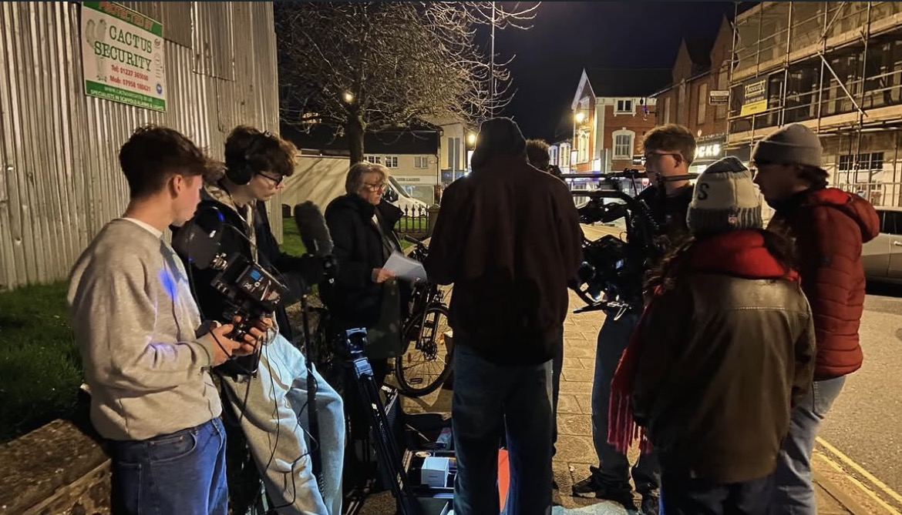
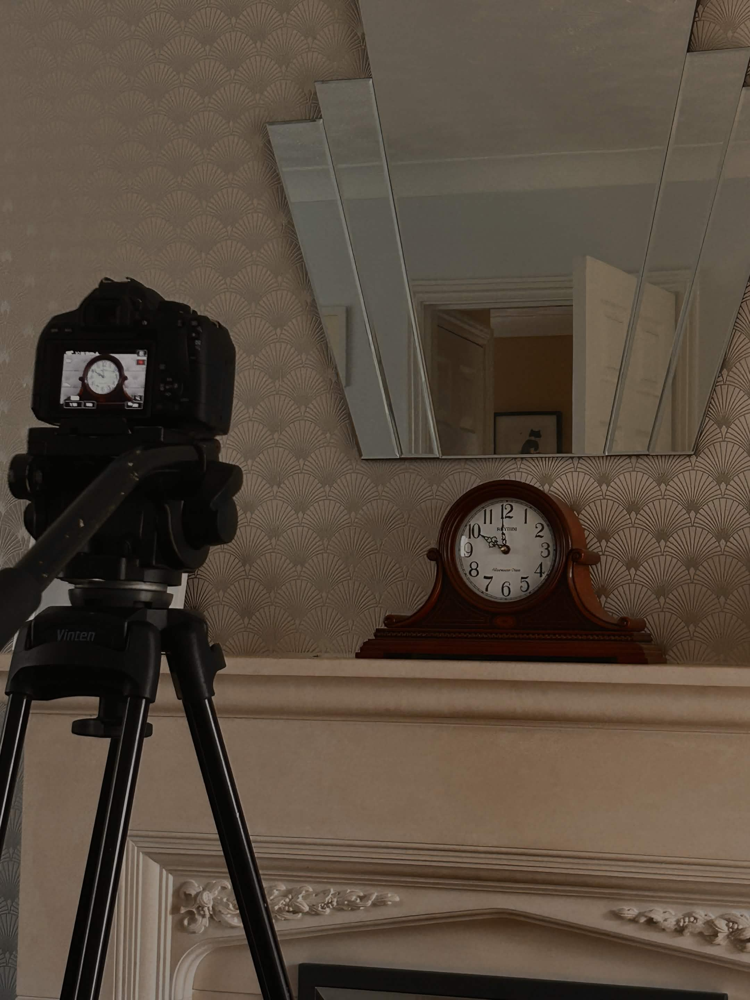
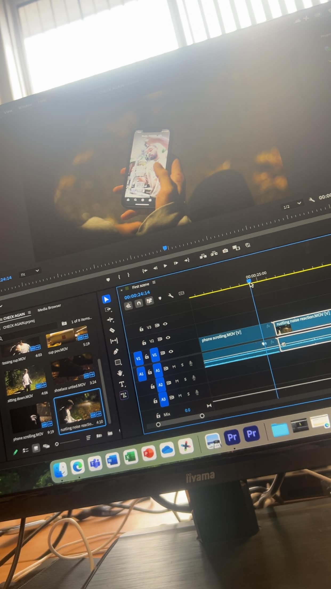
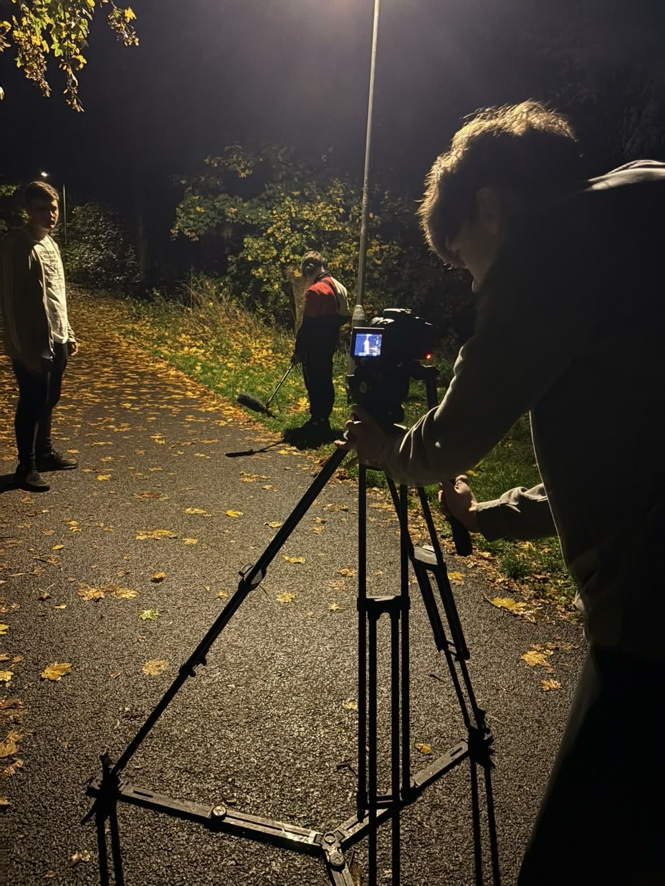
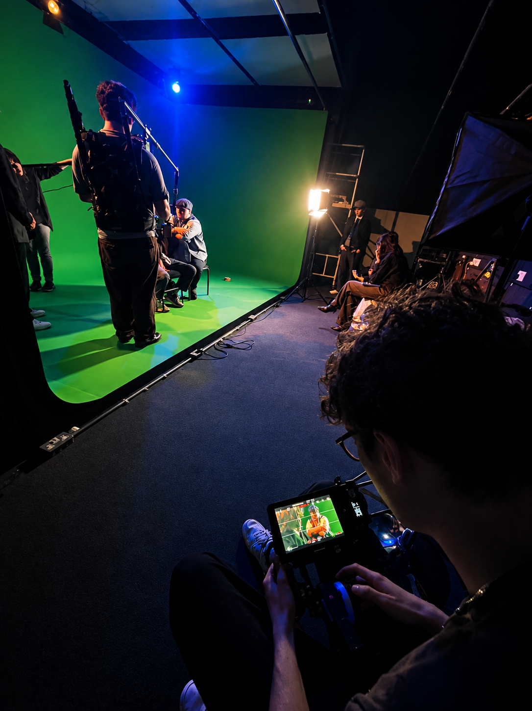
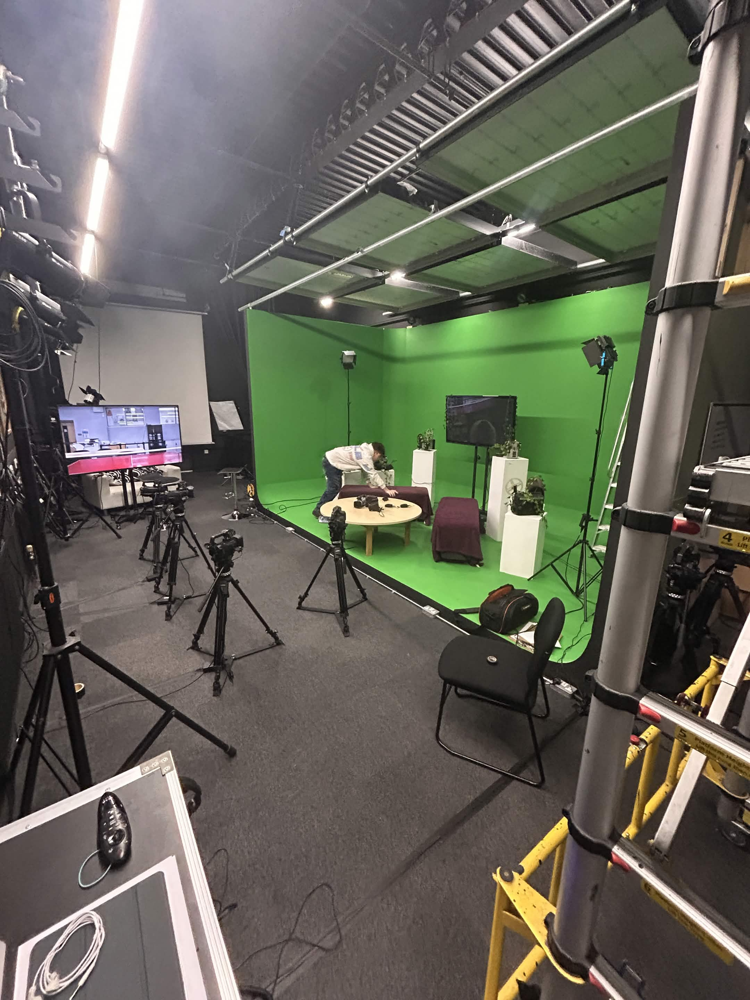
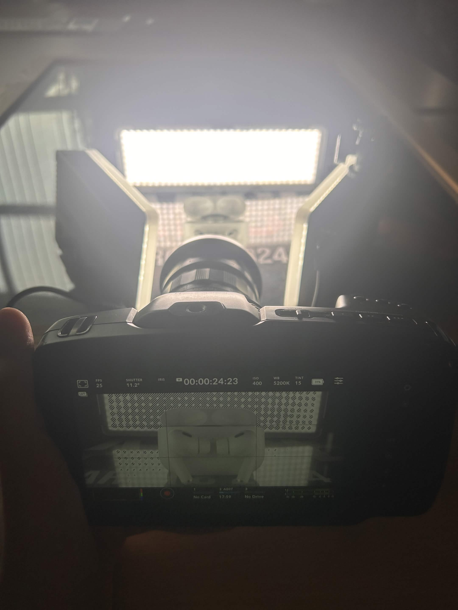
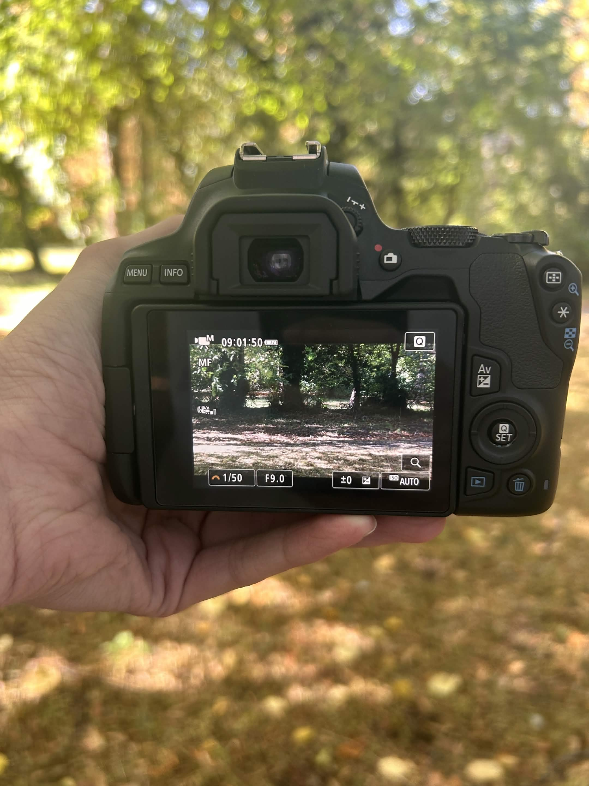
FROM WATCHING
TO MAKING.
I've watched over 800 films at just 18, and over time, that interest grew into wanting to be part of the process of making them.
Atmosphere is everything.
I'm always drawn to the visual details that can make a shot stick with you — the feeling of a place, the way light falls, or a moment that feels slightly out of place.
I'm George Cobden, currently studying Level 3 Film & Media Development at West Suffolk College. I love being involved behind the scenes, particularly Camera Operating, Sound, and Editing. I like how small details can completely change a scene — why a character is positioned on one side of the frame, how a piece of music changes the feeling of a moment, or how a sound can make an image feel completely different.
Cobden Pictures is my portfolio and a record of where I'm at as I continue developing as a filmmaker. I'm currently looking towards opportunities in the film industry, whether that's through employment, an apprenticeship or further study.
FILM REVIEWS
02 / REVIEWSWATCHING
FILM.
Alongside making films, I regularly write about the films I watch, focusing on what makes them work — from performances and atmosphere to cinematography, sound and storytelling.
THE END OF OAK STREET
Set in the early 80s, The End of Oak Street follows the Platt family as their ordinary life is disrupted by the arrival of dinosaurs in their neighbourhood.
Strong performances from Anne Hathaway and Ewan McGregor create a believable family dynamic, while the impressive special effects bring the prehistoric creatures to life. There's also plenty of light-hearted humour between the family, even as the situation around them becomes increasingly chaotic. While the film didn't change my personal feelings towards dinosaur films, there's still plenty to enjoy.
READ FULL REVIEW →PRODUCTION EXPERIENCE
03 / EXPERIENCEON
SET.
A selection of productions I've worked on and the roles I've taken on throughout my journey into film.
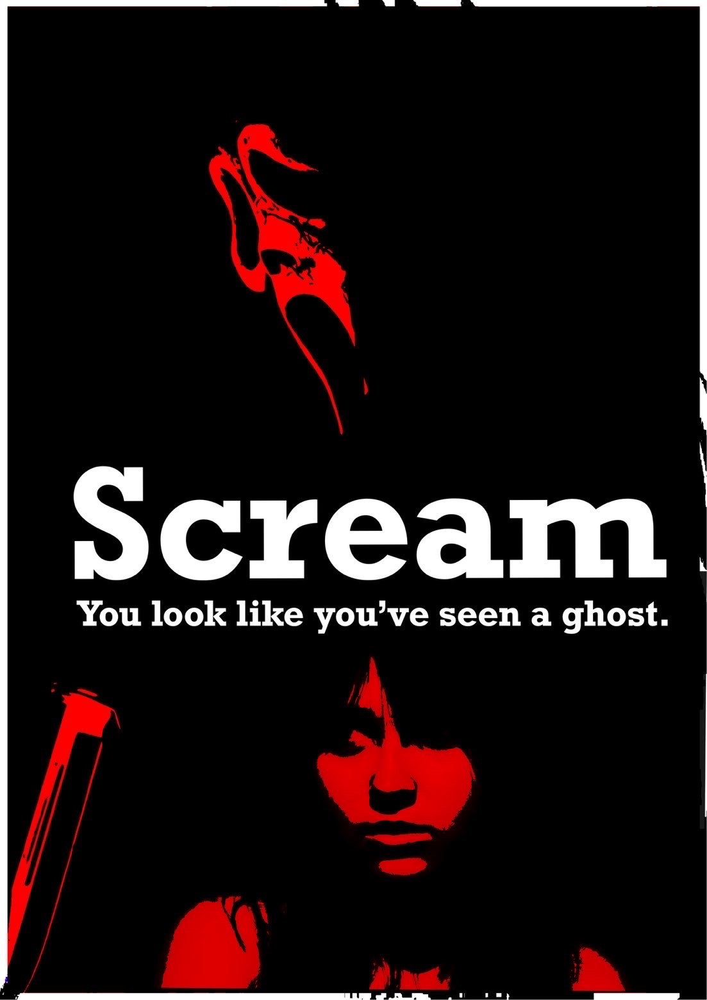
THE SCENE
CAMERA OPERATOR · FOCUS PULLER
A class production challenge to recreate a scene from a chosen film, which ultimately became Scream (1996). I worked within the camera department as Camera Operator and Focus Puller. Filmed on the URSA Mini Pro 12K.
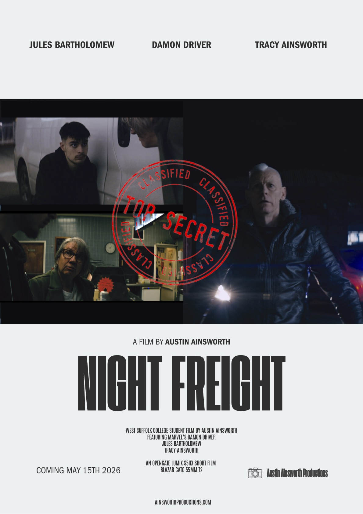
NIGHT FREIGHT
SOUND / AUDIO
Worked primarily on sound and focus pulling throughout the production.
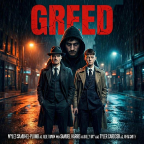
GREED
SOUND / AUDIO · ACTOR
Worked on audio and also appeared in the film in one scene.
SELECTED WORK
NADIA
My end-of-year short film, created as a 'final major project' during my Film & Media Development course.
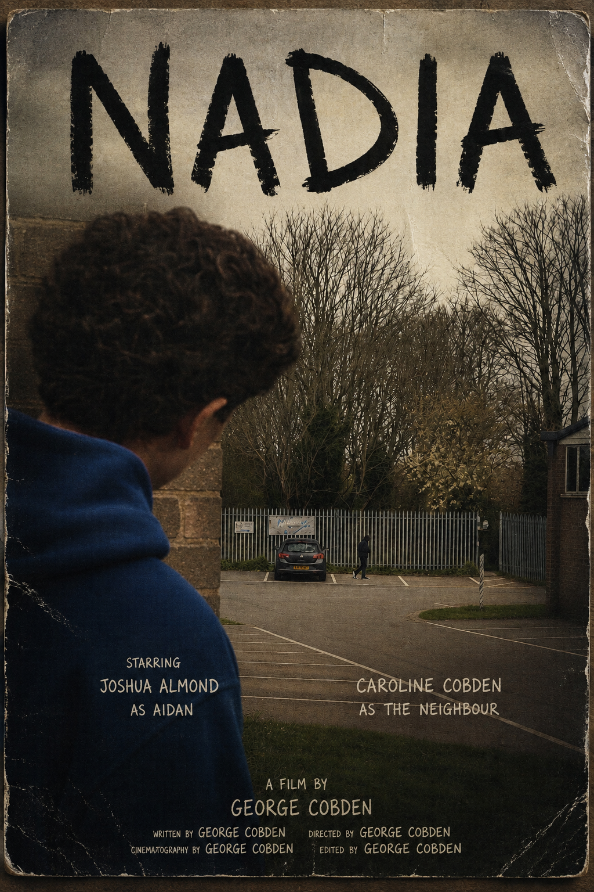
Short Film · 2026
WATCH FILM →THE SCREENPLAY
Read the original script written for NADIA, developed alongside the production of the short film.
READ SCREENPLAY →GET IN TOUCH
CONTACT ME
For job opportunities, enquiries, film projects or potential collaborations, please get in touch.
cobdenpictures@gmail.com